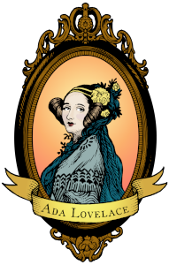

Home Ada Lovelace Charles Babbage Alan Turing
Augusta Ada King, Countess of Lovelace (née Byron; 10 December 1815 – 27 November 1852) was an English mathematician and writer, chiefly known for her work on Charles Babbage's proposed mechanical general-purpose computer, the Analytical Engine. She was the first to recognise that the machine had applications beyond pure calculation, and to have published the first algorithm intended to be carried out by such a machine. As a result, she is often regarded as the first computer programmer. (From Wikipedia)
She speculated that the Engine "might act upon other things besides number… the Engine might compose elaborate and scientific pieces of music of any degree of complexity or extent." The idea of a machine that could manipulate symbols in accordance with rules and that number could represent entities other than quantity mark the fundamental transition from calculation to computation. Ada was the first to explicitly articulate this notion and in this she appears to have seen further than Babbage. She has been referred to as "prophet of the computer age." Certainly she was the first to express the potential for computers outside mathematics. (From "Ada Lovelace" at Computer History Museum)
From 1832, when she was seventeen, her mathematical abilities began to emerge, and her interest in mathematics dominated the majority of her adult life. Her mother's obsession with rooting out any of the insanity of which she accused Byron was one of the reasons that Ada was taught mathematics from an early age. She was privately educated in mathematics and science by William Frend, William King, and Mary Somerville, the noted 19th-century researcher and scientific author. In the 1840s, the mathematician Augustus De Morgan extended her "much help in her mathematical studies" including study of advanced calculus topics including the "numbers of Bernoulli" (that formed her celebrated algorithm for Babbage's Analytical Engine). In a letter to Lady Byron, De Morgan suggested that Ada's skill in mathematics might lead her to become "an original mathematical investigator, perhaps of first-rate eminence". (From Wikipedia)